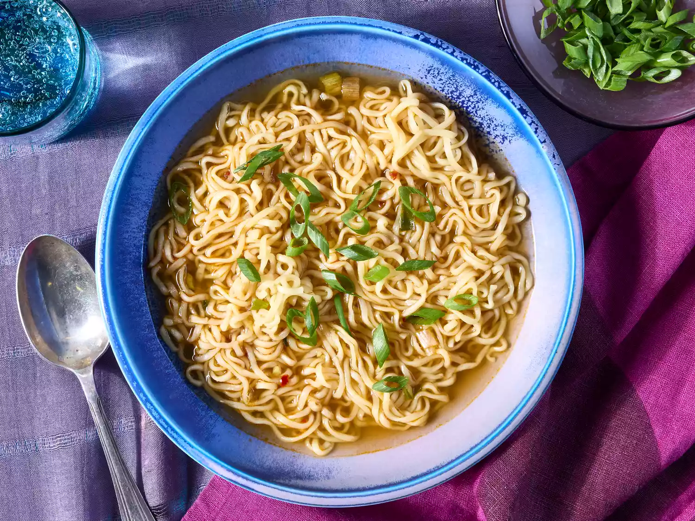

Ramen Noodle Soup

Description
This savory ramen soup is easy to make, ready in a flash, and very, very good! I like to add ginger, soy sauce, sesame and chili oil for a delicious flavor.
Ingredients
- 3 ½ cups vegetable broth
- 1 (3.5 ounce) package ramen noodles with dried vegetables
- 2 teaspoons soy sauce
- ½ teaspoon chili oil
- ½ teaspoon minced fresh ginger root
- 1 teaspoon sesame oil
- 2 green onions, sliced
Steps
- Gather the ingredients.
- Combine broth and noodles in a medium saucepan; cover and bring to a boil over high heat, stirring to break up noodles.
- Reduce heat to medium and add soy sauce, chili oil, and ginger. Simmer, uncovered, for 10 minutes.
- Stir in sesame oil.
- Garnish with green onions and serve.